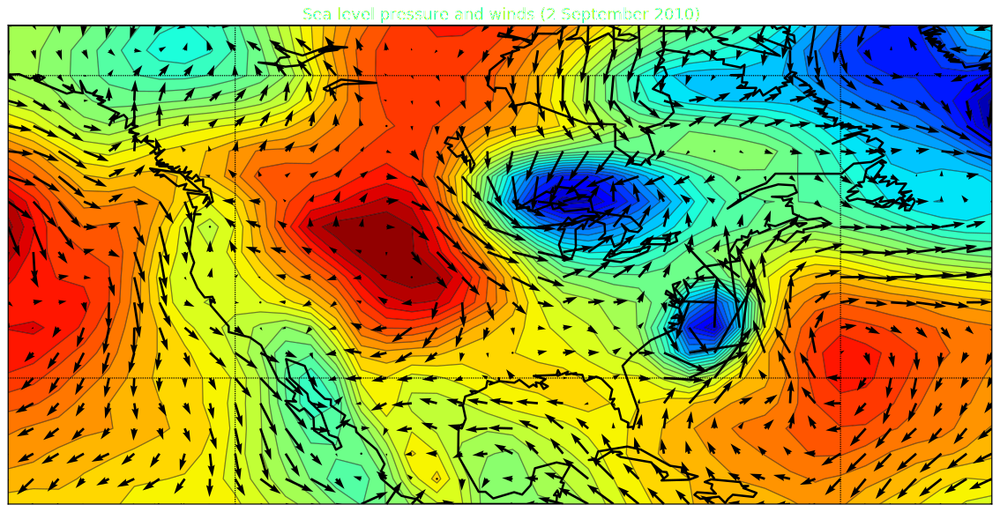
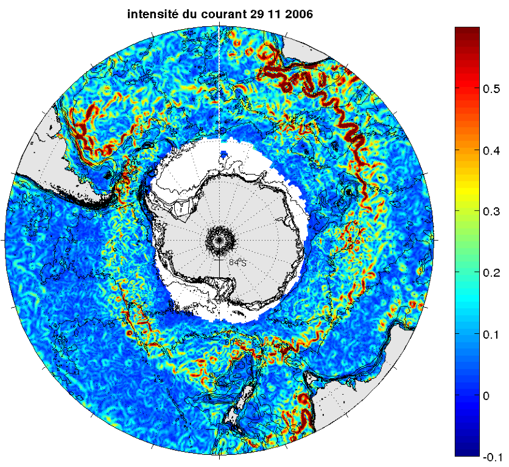
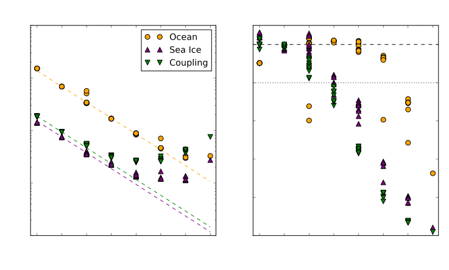
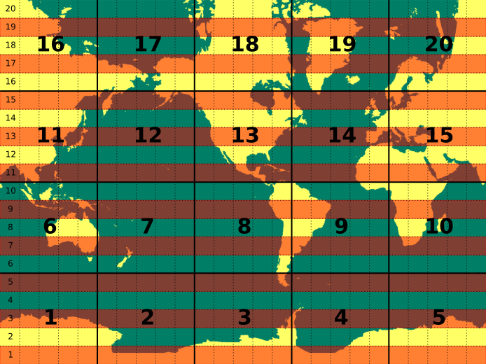

AIME 2016
Marshall Ward
National Computational Infrastructure

Introduction...?
- Why do we need high resolution ocean models?
- How do we run high-resolution ocean models?
- Can we continue to run these models?
Atmospheric scales

Atmospheric scales

Atmospheric scales
Ocean scales
Length scale of the ocean

(Hallberg 2013)
0.1° is a minimum for Southern Ocean dynamics
Model dynamics overview
(Need to redo this...)
Mostly a hyperbolic PDE with constraints
$$ \begin{align} p_z &= -g \rho \\ \mathbf{u}_t + \mathbf{u} \cdot \nabla \mathbf{u} + w \mathbf{u}_z + f \hat{z} \times \mathbf{u} &= -\tfrac{1}{\rho} \nabla p + \mathcal{F} \\ \phi_t + \mathbf{u} \cdot \nabla \phi + w \phi_z &= \mathcal{F}_\phi \ (\phi \in T, S, \ldots) \\ \nabla \cdot \mathbf{u} + w_z &= 0 \\ f(\rho, T, S, ...) &= 0 \end{align} $$But there are a lot of additional terms and forcings
Check out the Fujitsu talkTiling parallelisation

Tiling parallelisation

Scaling results

Submodels
Concurrent 1-year MOM 5
| CPUs | Runtime (s) | CPU Hrs | yr/day |
|---|---|---|---|
| 960s | 7364.9 | 1966.1 | 11.7 |
| 1920s | 3986.8 | 2126.3 | 21.7 |
| 2240c | 3347.5 | 2112.4 | 25.8 |
| 3840s | 2504.3 | 2776.5 | 34.5 |
| 4480c | 1919.6 | 2510.0 | 45.0 |
| 8960c | 1500.9 | 3964.8 | 57.6 |
Subroutine analysis

3D Tracer advection

2D ocean surface (barotropic) solver

2D ocean surface smoothing

Streamfunction bottleneck

Integration of $$\psi = \int_0^{L_y} u dy$$ for tile must collect values to the south
$N_\text{msg} \approx \frac{1}{2} N_x N_y^2$
Flux exchange bottleneck
- Ocean blocks
(Non-contiguous) - Coupler strips
(Not grid-aware)
- Coupler sends fractional cell overlap to every ocean tile!
- Even though most are zero!
- This one-time calculation fails past 1000 CPUs
Summary
- Ocean modelling requires higher resolutions